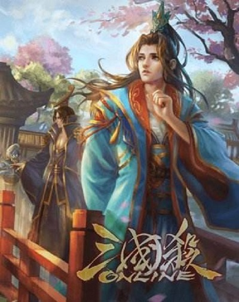

|  | 建安十五年（210年），曹操在邺城所建的铜雀台落成，召集了一批文士“登台为赋”，曹植也在其中。在众人之中，独有曹植提笔略加思索，一挥而就，而且第一个交卷，其文曰《登台赋》。从此曹操对曹植寄予厚望，以为他是最能成就大事的人。 立嗣
|
登台赋从明后而嬉游兮，聊登台以娱情。
见太府之广开兮，观圣德之所营。
建高殿之嵯峨兮，浮双阙乎太清。
立冲天之华观兮，连飞阁乎西城。
临漳川之长流兮，望园果之滋荣。
立双台于左右兮，有玉龙与金凤。
连二桥于东西兮，若长空之蝃蝀。
俯皇都之宏丽兮，瞰云霞之浮动。
欣群才之来萃兮，协飞熊之吉梦。
仰春风之和穆兮，听百鸟之悲鸣。
天功恒其既立兮，家愿得而获逞。
扬仁化于宇内兮，尽肃恭于上京。
虽桓文之为盛兮，岂足方乎圣明。
休矣美矣！惠泽远扬。
翼佐我皇家兮，宁彼四方。
同天地之矩量兮，齐日月之辉光。
永贵尊而无极兮，等年寿于东王。 |
建安十九年（214年），曹植改封临淄侯。这一年 ，曹操东征孙权，令曹植留守邺城，告诫他：“当年我担任顿邱令的时候二十三岁，回想起那时候的所作所为，至今都不曾后悔。如今你也是二十三岁，怎能不发奋图强呢！”曹植既因为有才而受宠，丁仪、丁廙、杨修等人便都来辅佐他。曹操有些犹疑，好几次几乎要立曹植为太子。然而，曹植文人气、才子气太浓，常常任性而行，不注意修饰约束自己，饮起酒来毫无节制，做出几件让曹操很是失望的事。 |
| 作者将铜雀台当作吟咏曹操功绩的对象，紧紧围绕铜雀台展开对父亲曹操的歌颂与赞美,文辞华丽,语句跌宕。 | 尤其是在建安二十二年（217年），他在曹操外出期间，借着酒兴私自坐着王室的车马，擅开王宫大门司马门，在只有帝王举行典礼才能行走的禁道上纵情驰骋，一直游乐到金门，他早把曹操的法令忘到九霄云外去了。曹操大怒，处死了掌管王室车马的公车令。从此加重对诸侯的法规禁令，曹植也因此事而日渐失去曹操的信任和宠爱。十月，曹操召令曹丕为世子。从此，曹植告别了昂扬奋发的人生阶段，陷入难以自拔的苦闷和浓浓的悲愁中。
建安二十四年（219年），曹仁为关羽所围困，曹操让曹植担任南中郎将，行征虏将军，带兵解救曹仁。命令发布后，曹植却喝得酩酊大醉不能受命，于是曹操后悔，不再重用他。 |